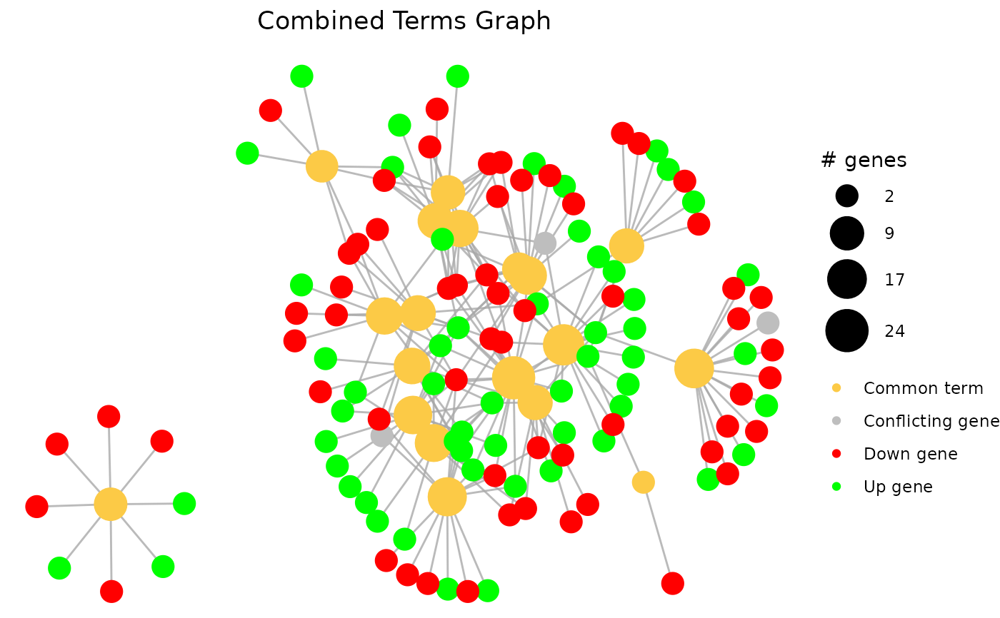

Combine 2 pathfindR Results
combine_pathfindR_results(result_A, result_B, plot_common = TRUE)data frame of first pathfindR enrichment results
data frame of second pathfindR enrichment results
boolean to indicate whether or not to plot the term-gene
graph of the common terms (default=TRUE)
Data frame of combined pathfindR enrichment results. Columns are:
ID of the enriched term
Description of the enriched term
Fold enrichment value for the enriched term (Calculated using ONLY the input genes)
the number of iterations that the given term was found to enriched over all iterations
the lowest adjusted-p value of the given term over all iterations
the highest adjusted-p value of the given term over all iterations
the up-regulated genes in the input involved in the given term's gene set, comma-separated
the down-regulated genes in the input involved in the given term's gene set, comma-separated
Fold enrichment value for the enriched term (Calculated using ONLY the input genes)
the number of iterations that the given term was found to enriched over all iterations
the lowest adjusted-p value of the given term over all iterations
the highest adjusted-p value of the given term over all iterations
the up-regulated genes in the input involved in the given term's gene set, comma-separated
the down-regulated genes in the input involved in the given term's gene set, comma-separated
the combined p value (via Fisher's method)
whether the term is found in both analyses ("common"), found only in the first ("A only") or found only in the second ("B only)
By default, the function also displays the term-gene graph of the common terms
combined_results <- combine_pathfindR_results(example_pathfindR_output, example_comparison_output)
#> You may run `combined_results_graph()` to create visualizations of combined term-gene graphs of selected terms
